来源：https://u16gtzbrexc.feishu.cn/docx/PRECdeiekoc66UxtFk0cVCaQnMh
大家好，我是千易。今天就把我们近一年做的业务拿出来做一个复盘，同时也和各位圈友一起交流。这个项目我们单月做到100W以上的收益。
我从21年开始做抖音直播带货，免费流、憋单低价转高价，AB链等各种玩法，很多类型的直播间都做过。
22年后半年，我做一个园艺用品直播间，当时的免费流已经开始被千川抢流量。我们被卡在一个流量池瓶颈，于是开始尝试付费，最后彻底成了付费直播间，ROI3-4，维持了半年也赚了一笔。当时觉得付费简单YYDS~
但是事情总不会向理想的方向发展！23年年后ROI急转直下，我们半年打了多个品，ROI始终被卡在1.8-2.5之间，GMV好看，但利润已从过去的20-30%，跌到5-10%。23年3-6月份整个项目基本不赚钱。
当时看了盗坤哥的一篇文章说，付费就是慢性毒药！觉得很有道理，付费买量确实简单，但是给平台打工，流量团队核心就是降低流量成本，生产内容的能力。所以在23年7月份我停掉了公司的付费流直播间。
23年7月，继续做免费流直播间项目，当时我做了一个调研，把百货和食品领域月销在10万以上的所有商品链接看了一遍，用蝉妈妈一个链接一个链接看过去，寻找近1个月起号的免费流直播间，销量还不错的。
最后我选到一个近期起来的直播间，第一个月销售额100W+，毛利40%，还是精选联盟发货。只做流量就能挣钱，前面讲知识+后面卖货+单品打爆模式。然后开始研究这个对标，到10月份我也做到了单月100W。后来，我陆续发现了很多这种类型的直播间，我把这种直播模式叫做内容型直播。
给大家介绍下什么是内容型直播间。粗浅的理解就是通过内容吸引流量的直播间都属于内容型直播间。
比如唱歌跳舞，讲知识，刘畊宏带着大家做有氧健身，中老年跟练拍打操/八段锦，家庭教育/法律咨询在线解答问题，导游带你云游景区的直播间很多很多。
那么内容型电商直播间就是，通过内容吸引用户停留，互动，通过内容建立信任，最后卖货的直播间。我做的是养胃知识分享+卖货的直播间，属于大健康类。
现在在抖音、视频号、小红书这些内容平台获取流量本质上就两种方式，第一就是用优质内容帮平台留住用户，提高营收，系统会给你免费流量。第二就是用钱买流量——付费流量。
内容型直播间还有一个更高级的形式——类目IP直播间。
以下就是部分内容型直播间举例，分为真人出镜直播间、非真人出镜直播间。
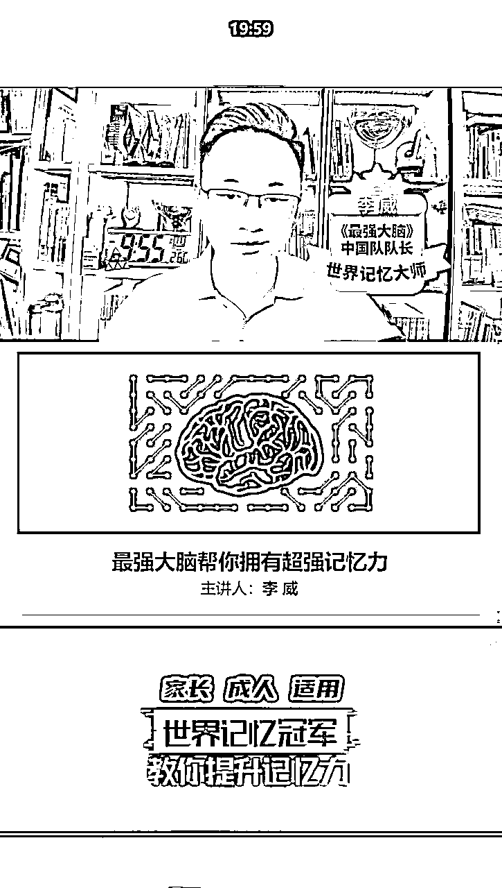
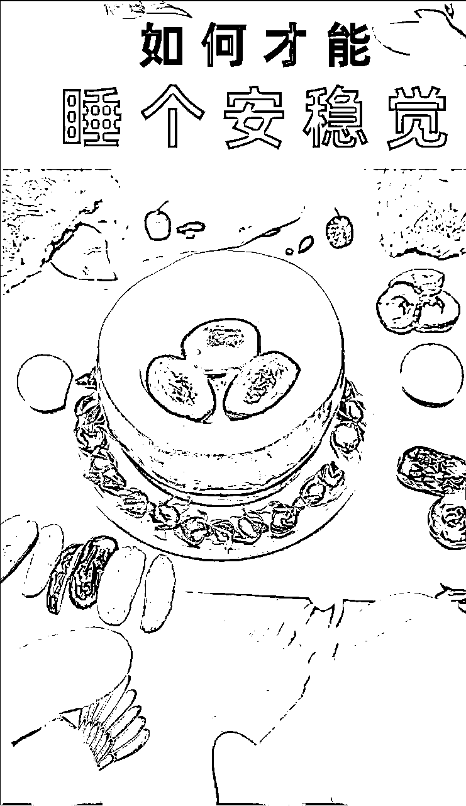
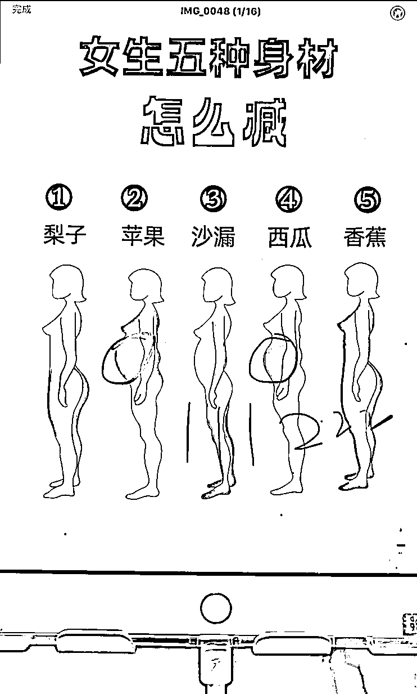
我做的是养胃直播间，养胃类型的直播间也分为真人出镜和非真人出镜。
给大家看下我们直播间的真实数据情况，前期是纯免费流，后期是免费流 + 30%左右的付费。
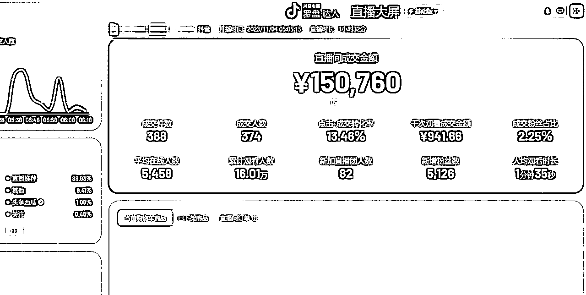
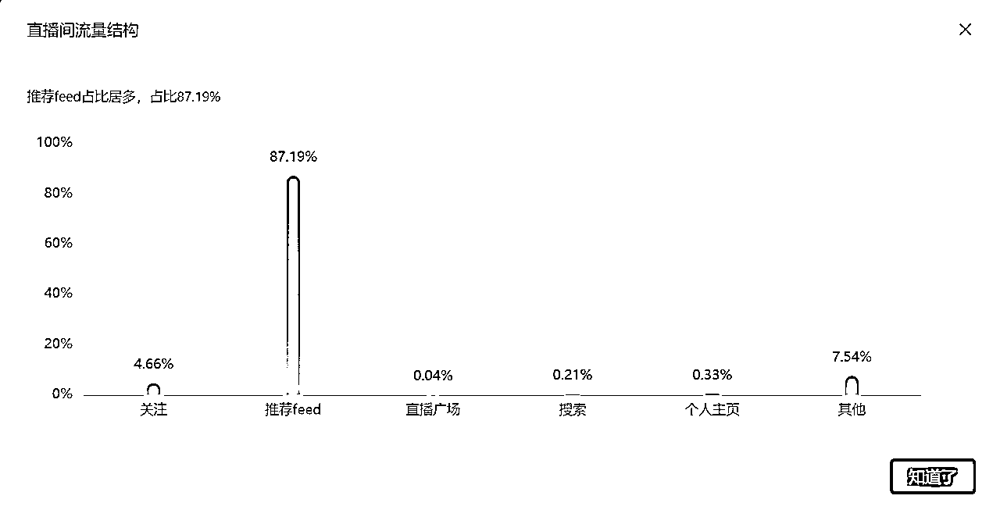
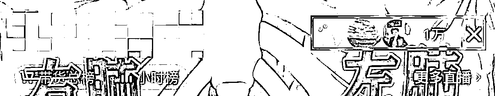
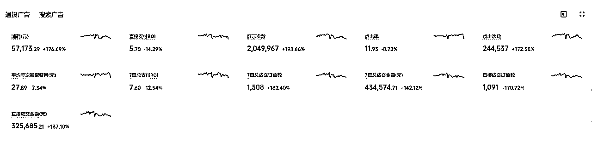
内容型电商直播间玩法基本都是一样的。通过内容拉用户的停留和互动数据，激发系统推送免费流量，突破流量池层级，这样的直播间开播极速流在线会在3000人以上；服装、美妆、健身等大类目可以做到3-4W人在线，养胃最高极速流做到1.8W在线。
在线上去了，先直播讲半小时知识，然后卖产品，直到在线跌倒几百人就下播了，所以这类直播间的直播时长在1-2.5小时，一个主播一个运营可以做2个直播间。
整个变现路径解析：直接直播起号。起号先讲知识留人，做浅层数据——拉高极速流后，前面讲知识，后面卖货。产品可以来自精选联盟，对产品的性价比要求不高，但是必须是爆款产品。
1、内容型直播间主要吃的就是极速流的高在线，以及前面半小时的推流。所以，流量端要做的就是如何拉高极速流在线人数。给大家看下起号时候的在线数据变化、互动关注等数据变化情况。
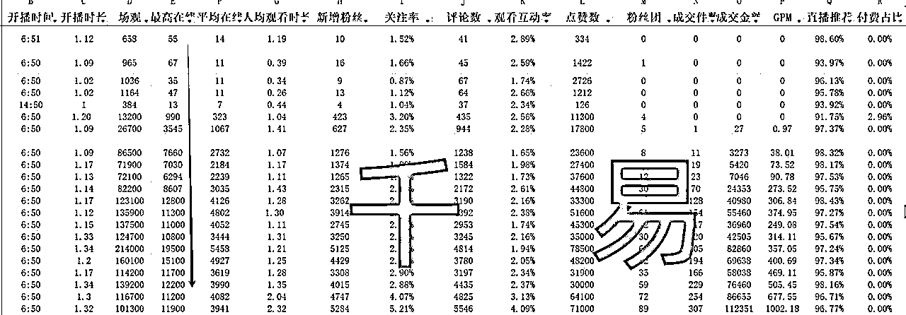
2、抖音系统的推流是遵循标签算法和流量池算法的，想要拉高极速流必须得在直播间打上浅层数据标签，就需要目标用户在直播间做出停留时长、评论、关注这些数据，并且要做的比同行好，系统才会推送更大的流量。
3、极速流属于抖音的预分配流量，预分配流量是参考过去1-3场直播间的实时数据排名做的流量层级，而想要让预分配流量变高，就需要上一场直播过程中拉高在线，然后卡黄线下播。
4、抖音流量分配是赛马机制下的流量池逻辑，流量池阈值分为在线30人、60人、80人、120人、180人，230人，260人，1000人，3000人，6000人，10000人，13000人，15000人，18000人，21000人，30000人。简单来讲，就是在线破了一个流量层级就会拿到下一层级的在线人数。
5、这样的内容直播间一定要用新号起号，因为新号有流量扶持。而且新号可以跳层级，它可以从在线120人直接跳到在线1000人。老号就得一级一级的打怪。
6、内容型直播间的核心是爆款内容。只有爆款内容才能拉高用户的停留、互动关注数据，才能把在线拉到几千人。所以大家做这类直播间一定要打磨爆款内容。
7、流量来源于内容，内容得同时兼顾知识+互动引导。话术结构就是知识+互动+知识+互动，就像老师讲课，一边讲，一边提问，一边调动同学情绪。
8、内容直播间的核心是内容，那么在直播间出现的背景、贴纸、文字、颜色、主播、服化道、摆件、整体风格和氛围等，所有这些都是内容的一部分。尤其是人，比如养胃针对的是中老年人群，如果出镜的主播是20多岁的小姑娘是留不住用户的。
9、新手在直播间对标选择时，优先建议大家做非真人出镜的更简单，内容方面的变量更少，成功率更高。如果选择真人出镜直播间，一定要匹配合适的主播。
1、有了大流量基本都能卖出去货，但是直播间转化率的高低不一样。
2、影响转化的主要有两个因素：内容到卖产品的承接话术、产品本身是否是爆款。
3、前面20分钟讲知识，为了洗人，也可以提高用户的信任，中间10分钟要从知识转到产品上，需要承接话术无缝衔接，如果用户发现前后衔接别扭，掉人会非常快。
4、产品也必须是爆款产品，能够让上千人停留下单的品肯定要满足大部分人。同样是养胃的直播间，卖驼奶粉一场可以做10W+，但是卖养胃中草药包只能卖2.5W（有个同行就是卖的这个。）
5、产品的客单价不要太低。内容洗人本身留下来的人是比较精准的，所以中高客单也可以转化。正常建议客单价在100左右，有痛点有功效的在200左右。
6、养胃直播间是匹配的驼奶粉，298买一罐送一罐，894买三罐送四罐，1799买6罐送9罐，还送礼品袋+燕麦饼干+试喝条。刚开始给达人40%，起量后给达人50%佣金。
7、直播卖货阶段的产品规格设置和价格设置，也要考虑福利感，让消费者觉得这是福利。
8、选择的品要有背书资质，明星代言、XX院研发、专利配方、防伪贴、质检报告、网红带货同款等更好卖。
9、直播卖货过程中多次逼单促单，也能够提高转化率。
内容型电商直播间的流程：内容留人，拉高极速流 + 产品转化
内容型电商直播间的核心：爆款内容 + 爆款产品 + 人群匹配
内容型电商直播间的难点：主播本身特质 + 话术
利润计算 = （销售额-退款退货）*佣金率*0.9（10%技术服务费）-投流费用（可能没有）
1、确定直播形式。非真人出镜对主播个人特质要求不高，普通话能听懂就行。真人出镜对主播特质有要求
2、主播。需要找到和对标直播间年龄、特质风格类似、和目标人群同层次的更好，直接影响成功率。主播有免费流拉流能力，了解抖音逻辑，知道在直播间做数据。主播能够懂专业知识，有经验就更好一些，比如养生直播间主播本身是营养师。
3、运营。要求有1年以上自然流运营经验，对直播间起号，话术，场景等都懂，之前有成功起号的经验，熟悉抖音算法，能够拆解对标直播间玩法，在线盯盘，能够快速发现直播问题并快速解决。
重要：内容型直播间对运营能力和主播能力的要求要高一些。
1、准备2-3个全新的抖音号，养号3天，正常刷内容；
2、新抖音号需要涨粉丝1000个，不要互粉互赞。
3、实名认证，开通电商橱窗，直播伴侣权限、信用分考试、经营护航考试。
4、开播前两天设置头像、名称、个人签名、背景图4件套。
5、联系精选商家开通定向高佣，添加到选品车。
1、制作图片背景/或者用ipad展示；
2、手机就可以直播，推荐苹果12手机以上，加水冷散热器，充电线、手机支架1套；
3、产品样品，产品资质图片，话术1套；非真人出镜直播可以读话术；
4、运营电脑一台，后台盯盘，看数据、弹讲解、上下架商品用；
5、灯光2个，我用的金贝220BI
6、我们手机用的是流量，手机卡需要办大流量套餐。
1、直播电脑1台，CPU在12代I5/I7以上，显卡3060以上，配置要高一些，否则容易卡；
2、摄像头：索尼ZVE10/索尼A7M4+适马摄像头；
3、采集卡：我用的是美乐威，也有人推荐圆钢的；
4、声卡：IXI或icon，我用的IXI；
5、麦克风：可以用电容麦克风，也可以用罗德无线麦；
6、显示器：主播大屏小米50寸电视；运营屏幕普通电脑显示器；
7、灯光：3-4盏金贝，外加柔光罩；具体看场地情况。
8、背景：可以用真实场景布置、喷绘布场景、绿幕抠图场景，三选一；
9、软件：OBS + 直播伴侣；
10、主播看播手机一台，能用就行；
11、调音：麦克风+声卡需要有专门的调音师调音才能用。
12、场地在20平以上,30平左右比较好。
13、一些知识讲解型的直播间需要用多媒体一体机，我用的是JAV。
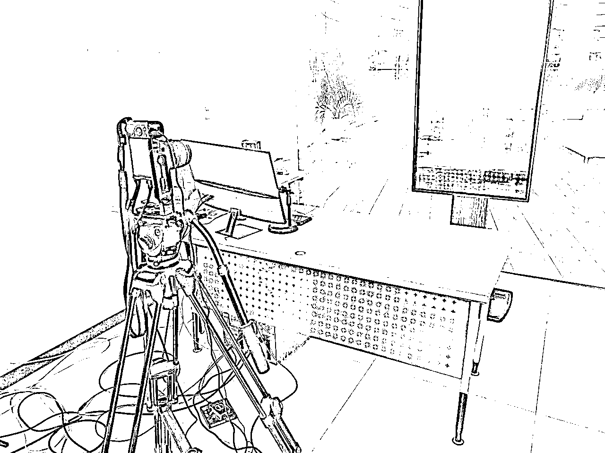
投入总结：非真人出镜直播间5000-1W就可以搞定，真人出镜直播间设备全新4W以上的；前期可以找租赁商租设备。新手推荐先从非真人直播间做起。
1、可以通过蝉妈妈看某个领域的达人账号，佣金从高到低排序，然后看粉丝量0-10万左右的账号，从里面找到对标账号。注意选择的是领域。
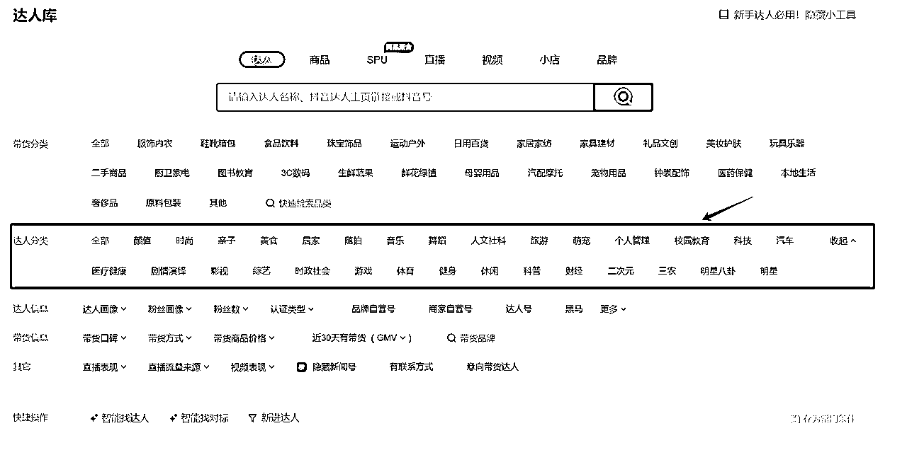
2、可以通过产品页面看某个类目的产品，一个个的链接往下看，从里面找到内容型直播间，一般内容型直播间的产品客单价在50元以上，特别便宜的略过。看近30天的数据。
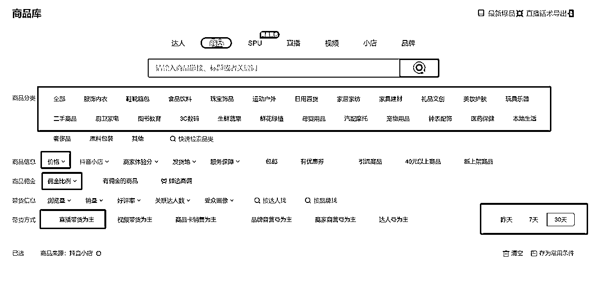
3、可以通过抖音前段刷内容训练系统给你推送相关的直播间。比如想看家庭教育类，你就搜家庭教育相关的关键词，然后看直播间内容，点关注，评论互动，然后系统就会推荐更多的同类直播间，你就能把同行找到了。不知道关键词是什么的，通过巨量算数看。
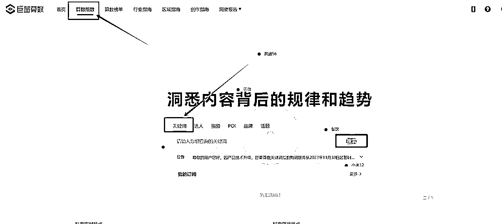
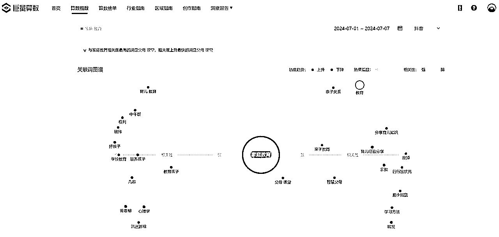
1、选对标要选近期的：内容是有一定的周期的，就像看短视频一样，一个爆款过十天半个月就没人看了。内容型直播间也是同样的道理，内容型直播间如果是非IP型的大概存活周期就是1年左右。选对标的时候要看做的最好的账号做的多久，另外还要看有多少同行。
养胃直播间我刚开始做的时候，同行就4个，到今年3月份同行已经有300多个了，但是80%挣钱的是年前做起来的。做的越早越容易拿到流量，先发优势明显！所以如果竞争很激烈了就换一个对标，比如有氧健身的竞争就很激烈，近3个月没有新号月销100W。
2、对标找到1个以后，一定要把所有的对标账号都看一遍，从里面找找看看有没有非真人出镜和真人出镜的直播间，同赛道对标有真人出镜和非真人出镜的，先选择非真人出镜的1:1对标模仿更容易成功。
整个行业竞争到一定程度，非真人出镜就起不来新号了，但是老号可以存活很久。等到非真人做不了了立刻转真人出镜，真人出镜的存活周期比非真人久。我做养胃真人直播间晚了，第一波红利被别人吃了，对方单月GMV300W维持了2个多月。
1、对标找到以后，用直播录制软件把整个对标的直播间画面场景，直播话术录制下来，然后1比1模仿搭建出来一个直播间，主播把话术背过，准备开始直播。
2、运营从商家端达人广告扒取同行的所有直播数据，记录在表中，你起号时要做的停留、互动、关注、转化率、GPM数据比对标好一点，才能破流量池。
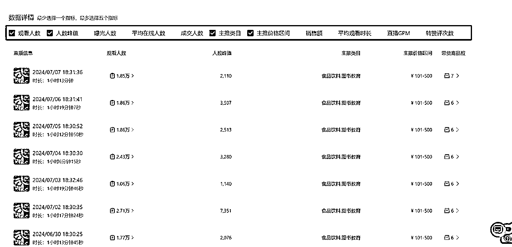
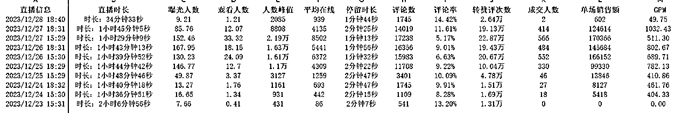
当把所有的准备工作做完后，就开始直播，抖音最难的也是0-1阶段，在这个阶段要同时打精准标签，并拉起流量，极速流要达到3000人在线以上。以下是整个内容型直播间的起号流程，基本适用所有的内容直播间。
PS：由于去年的数据没有截图，只能给大家看蝉妈妈数据图了，蝉妈妈不是很准。
1、第一阶段：破风控。刚开始开播直播1小时场观200-500都是正常的，但是前几场曝光点击率会在30%以上，证明账号在风控中，不给推真人用户，基本没有停留和互动。
主播正常播1小时几分钟下播，做内容不卖货，运营每10分钟发1个福袋。
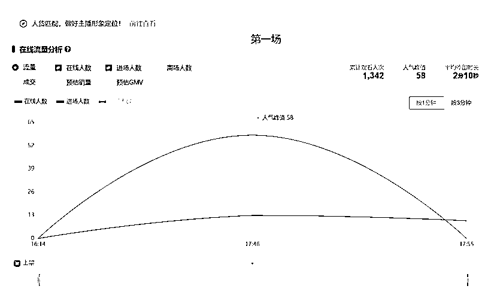
2、第二阶段：拉流。当直播人还是有真人互动停留开始，主播和运营就要进入拉流的状态。
主播需要在按照话术互动的节点，引导用户评论、关注、点赞。
运营每10分钟发一个福袋。运营这是要盯着后台，第一看曝光点击率，正常曝光点击率会在10-20%左右，直播推荐占比在70%以上，90%就是优秀。停留在1分钟以上，互动率，关注率做到优秀同行的水平。
PS：各行业的数据都不一样，没有统一答案，看对标数据，他就是答案。
直播可以根据直播间在线情况调整，直播在1-2小时左右，只要直播间的在线是一直上升的就代表还在破流量池，直到在线开始下降，卡黄线下播。如果一场的实时推流在线能在100人以上，第二场开播基本就会有100人的极速流。
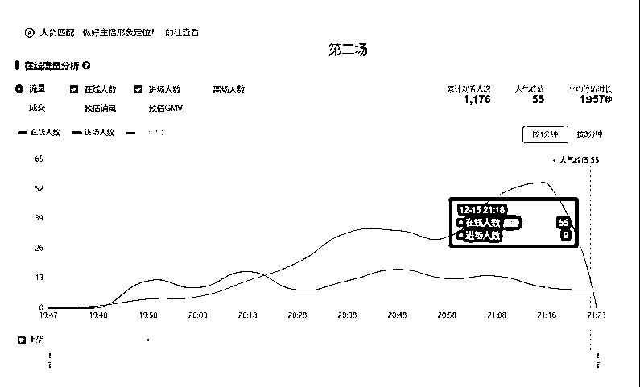
3、第三阶段：拉高在线流量。当直播间刚开播就有一波超过100人的极速流开始，主播和运营一定要承接极速流，按照对标的前10分钟话术留人，只有留住了极速流的人，在线才不会掉的很难看，只有留住了极速流，才能继续破流量池。所以前10分钟非常重要。
过了极速流，就按照之前的操作正常直播，尽量拉在线破260人在线。直播间流量超过260人，就会进入1000人在线流量层级，有时候账号数据好会连续破流量池，主播一定要知道承接做数据。等在线开始下降了，数据也做够了，就可以卡黄线下播。
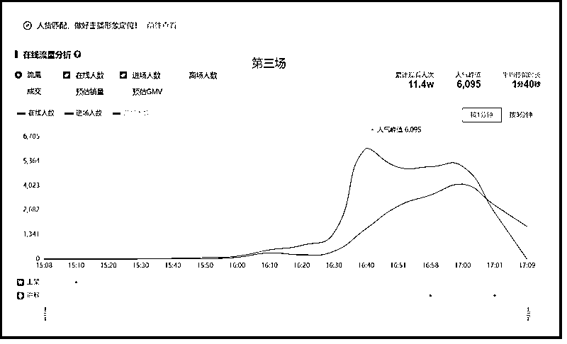
4、第四阶段：极速流破3000人卖货。当直播间开播能够破3000人的时候，当场需要卖货。由于前面拉流都是做的浅层数据，现在要做成交，深层数据。
运营主播看到破了3000人就更换话术逻辑，前面讲知识+后面卖货。
具体什么时候卖货，要看前面30分钟的浅层数据，浅层做到位了就卖货，有时候可能讲知识到50分钟才能做到位，所以卖货的节奏需要运营把握。
如果浅层数据没有做到位，就开始卖货，下场极速流会掉层级。成败的关键就是在这几天。
如果承接成功，账号的极速流会稳定在3000-10000人，然后每场就可以正常卖货了。
如果承接不到位，账号的极速流会掉回1000人在线，在这个时候一定要重复拉流的操作，重新拉在线回3000人。没有拉上去，还会掉到260人在线，这个时候就没救了，直接换号。
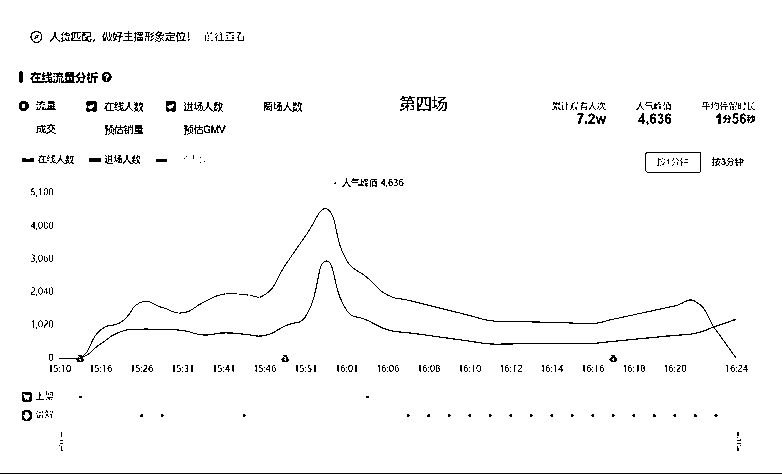
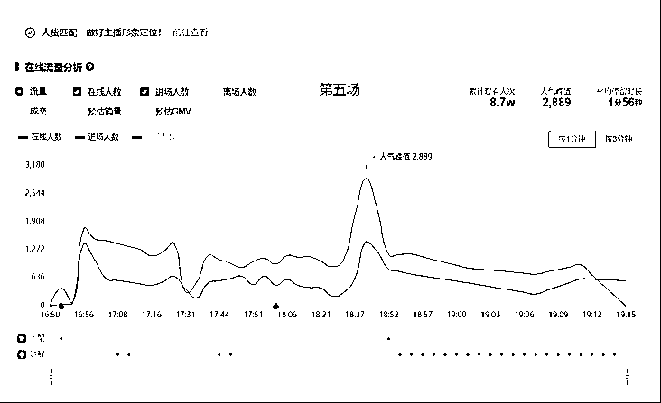
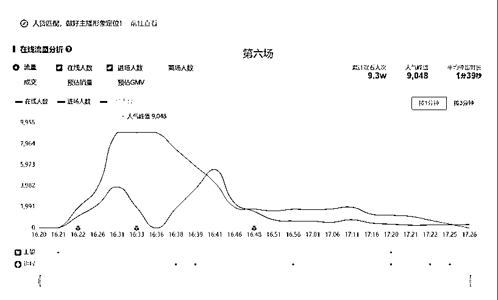
5、每场下播后统计数据做复盘。主播和运营以分钟级的直播过程复盘正常直播，然后调整其中的话术、逻辑、主播表现、运营配合等细节，然后把同行直播间也录制下单，跟着自己的做对比。复盘找到问题快速改正，不断优化。
抖音运营和主播配合是一个经验活儿，得需要有经验的运营带着主播一起做。我上面讲的是逻辑，细节操作可能还会遇到各种不同的问题。运营经验+主播经验很重要。
真正能够做起来一个号，背后可能都死了几个号呢。不要怕死号，多尝试，多实操，不断优化细节。
1、起号首先要解决的就是违规问题。所以主播一定要对违规词了解，找对标的话术一步一模仿，一定不要随意说话，有时候前后顺序改变都会出问题，养生类的容易出现功效虚假、涉及医疗问诊。起号的第一步要解决违规问题。新号一旦违规扣分2分以上，基本就不会有大推流了，只能换号。
2、新号起号的前面三四天是风控期。没有人或者有人来了不停留很正常，一般第三四天就破了风控了，直播间有人正常停留，互动就是破风控了。
3、开播时间选择，一般选择对标账号的前后1小时左右。因为内容型直播间的大流量是开播后的半小时，你和大主播错开1小时就不会有竞争，但是也不要离得太远，一个没有人播的时段不一定能够起号。比如对标是上午7点播，你就6点或者8点，成功率更高。晚上6-8点竞争很激烈，新号一般不选择，老号可以换时间。
4、开播时长：前期起号的时长控制在1-2小时就行，时间差不多卡黄线下播。
5、起号阶段不能扣信用分。直播间现在违规情况是第一次警告不会扣分，第二次会断播并扣0.5-2分。所以第一次警告后，主播就要很小心话术，如果觉得不行，可以直接下播，起号阶段不要扣分。下播后第二天再播。
6、直播间起号阶段一般一天直播一场。如果主播运营有精力，可以同时起2个号，更容易成功。所以大家在备号时可以多备2-3个。
7、如何判断账号没有问题。前几场开播1个小时有200-500场观，正常推流在线0-5个人，推荐feed占比70%以上就是没问题。
8、在账号没问题的前提下，直播间所有的问题都是内容问题。需要不断的调整打磨内容。从背景，贴纸，文字颜色，主播位置，主播语态神情，主播语气，话术的演绎，道具的使用。从这些细节中一点点研究。我们也是研究了1个月才起来号。
9、运营在直播过程中一定要盯数据，提醒主播。看曝光点击率、停留时长、互动率、关注率等数据，主播在直播的时候会忘记要互动，或者被评论区打乱节奏，运营一定要提醒。并且控评，有捣乱的说风凉话的都拉黑。同行也拉黑，有一些同行很恶心，总是点举报。我们直播间做起来后一场能有十几个举报。
10、举报不一定会被断播，断播代表直播间一定有问题。系统对于举报的考量是这样的，有人点举报会让系统审核直播间，只要你直播间没问题，系统是不会处罚的。一般系统处罚了就是直播间真的有问题，找到问题并修改。当你的直播间没有违规就不用担心举报了。
对标选的好，起号更容易。
直播间起号第一解决的是违规。
直播间的起不起得来核心就是内容。
主播和运营越匹配，成功率越高。
1、从我去年开始做内容型直播间，到今年4-5月份安排小伙伴做了10000多个直播间的调研，可以确定的告诉大家，内容型直播间是现阶段抖音很大的红利机会，通过内容拉人，免费流量会很大，而且直接走精选联盟卖货，不用担心后端，2个人就可以做起来的项目。内容是抖音永远稀缺的，提高自己的内容生产能力能显著降低流量成本，所以商家能给40-50%的佣金。
2、抖音是个内容型平台，我们用内容换取免费流量然后转化，是符合抖音的长期发展的，所以可以长期做。但是对用户来说，一类内容不喜欢看很多遍，所以用户一段时间会洗完，如果做成IP就会长久很多，IP代表信任。
3、内容型直播间主要的变现模式不仅仅是电商卖货，还有小风车导流、小雪花卖课、还有小游戏推广、小程序推广、APP推广等变现方式，其中还有很多蓝海项目值得大家探索。
4、抖音是个追爆款的逻辑，一个细分类目真正挣钱的直播间就是一九定律，10%的能赚钱，养胃赛道同时期同时赚钱的直播间没有超过10个；总共有100多人播了300多个号，所以先发优势很重要。
5、养胃直播间大家不需要费时间尝试了，养胃由于过去一年，同行太多竞争大，被同行打穿了整个行业，抖音官方以涉及医疗问诊行为违规，315前后封了一批直播间，618前后封了一批直播间，现在存活的直播间在线都不超过3000人，超过基本会被干掉。我们自己的直播间也在618被干掉了。而且从5月份开始出现了纯付费直播间，这个赛道基本快走到头了。
6、大家可以用蝉妈妈这样的数据平台重新找对标，如果你的目标一个月是几万的话，大把的直播间都可以找到。内容型直播间容易做到的类目天花板是月GMV100W多。大类目都需要积累才能达到月250W以上。
7、内容直播间的操作流程和起号方法都是相通的，可以按照我告诉大家的方向尝试，有问题多多交流。
你好，我是千易，9年自媒体人，6年电商人，17年创业做今日头条至今。头条、抖音、视频号、小红书都做过，现在主要做抖音、小红书。连续三次用5W本金赚到100W，操盘过多个项目，现在主要做大健康产业的直播间和短视频带货，有相关资源的伙伴可以链接！